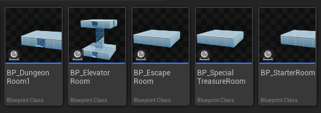
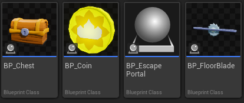

AbyssGen
로그라이크의 던전이 매번 다르게 만들어지는 방식을 직접 확인해 보려고 시작한 개인 프로젝트입니다. 상용 엔진을 쓰고 구현의 상당 부분을 AI와 함께 진행했으므로, 동작하는 코드를 어디까지 제 것으로 만들었는지가 이 프로젝트에서 판단이 필요했던 지점이었습니다. 아래 세 사례는 그 판단이 드러난 자리입니다.
던전이 조립되는 규칙
절차적 던전을 만드는 방법은 여럿이지만, 고른 기준은 두 가지였습니다. 제가 끝까지 이해할 수 있을 것, 그리고 나중에 구조를 자유롭게 바꿀 수 있을 것.
그래서 손으로 미리 만든 방을 한 방의 출구에 다음 방의 출구를 맞춰 이어 붙이고, 겹치면 폐기하고 다시 시도하는 방식을 택했습니다. 그리드나 타일맵은 쓰지 않으며 배치는 각 방의 출구 위치로만 결정됩니다.
시작 방 하나를 놓고, 아직 이어지지 않은 출구를 목록에 담습니다.
열린 출구 하나와 다음 방의 출구를 마주 보게 맞춰 방의 위치와 회전을 정합니다.
이미 놓인 방과 겹치면 그 시도를 폐기하고 다른 방을 다시 뽑습니다.
규칙이 이 셋뿐이므로 새 방은 코드를 고치지 않고 추가되며, 무작위 선택이 전부 하나의 시드를 지나가므로 같은 시드는 같은 던전을 만듭니다.
생성기를 얇게 유지한 세 가지 결정
이 프로젝트의 C++는 합성 우선과 단일 책임을 따릅니다. 비대해진 클래스는 컴포넌트로 나누고, 소유 액터는 컴포넌트를 조립하고 신호를 중계하기만 하는 얇은 façade로 두었습니다.
UDungeonPopulatorComponent가 맡아, 생성 로직을 그대로 둔 채 스폰 규칙만 바꿀 수 있음Spawn_Point_1~N 처럼 고정 멤버 변수로 박혀 방마다 개수가 고정이고 무엇을 둘지와 한곳에 묶임USpawnPointComponent가, 종류는 FSpawnTable이 정하므로 마커를 놓고 빼는 것만으로 스폰 구성이 바뀜FRandomStream을 지나므로 같은 시드가 같은 던전을 만들고, -1이면 난수 시드를 만들어 화면에 표시함
세 결정이 생성기 하나의 디테일 패널에 그대로 드러납니다. 배치를 맡는 Populator Component가 컴포넌트로 붙어 있고, Seed 칸의 값 하나가 던전 전체를 정합니다.
아래의 Spawned Rooms와 Dungeon Map Connections는 그 시드로 나온 결과이므로, 같은 값을 넣으면 같은 목록이 다시 만들어집니다.
구현 과정의 세 사례
동작보다 이해를 택한 결단
동작하던 프로토타입을 접고 설명할 수 있는 구조로 다시 시작한 과정입니다.
이 프로젝트의 목표는 절차적 생성이 실제로 어떻게 구현되는지를 확인하는 것이었으므로, 처음에는 자료에서 본 정교한 방식을 그대로 좇았습니다. 그리드 배치와 Separation Steering, Delaunay 삼각분할, 최소 신장 트리를 엮은 구성이었고 결과도 나왔습니다.
문제는 구조가 커질수록 코드를 따라가지 못했다는 점입니다. 빌드 오류가 나면 메시지를 그대로 넘기고 고쳐 받은 코드를 다시 돌리는 사이클만 반복되었고, 어떤 부분이 왜 그렇게 동작하는지 스스로 설명하지 못했습니다.
아니야 처음부터 다시 만들거야. 현재 프로젝트의 구조는 내가 잘 이해가 가지 않아. 처음부터 설계하면서 다시 만들어볼거야.
이해할 범위를 정한 선
다시 시작하면서 모든 것을 직접 이해하려 들지는 않았습니다. 알고리즘 자체는 역할만 알고 넘어가되 그것을 감싸는 구조는 제가 설계한다는 선을 먼저 그었고, 그 선 덕분에 복잡도를 고르는 기준이 “더 정교한 것”에서 “제가 바꿀 수 있는 것”으로 바뀌었습니다.
생성 알고리즘 자체는 내가 만들고 이해하지 않을거야. 외부 라이브러리를 사용하던, AI로 구현하던, 구현된 기능을 사용하고, 이 알고리즘이 어떤 역할을 하는지만 이해하고 넘어갈거기 때문에 알고리즘의 복잡도는 크게 중요하지 않아.
기존 코드를 지우고 새 폴더에서 시작해, 앞 절의 출구 규칙으로 다시 설계했습니다. 실행 환경도 이때 나눠, 에디터에서는 생성 과정을 단계적으로 볼 수 있게 하고 런타임에서는 한 번에 끝내도록 했습니다.
당장 굴러가는 결과보다 끝까지 설명할 수 있는 구조를 택했으며, 이해하지 않고 넘어갈 범위는 미리 정해 두어야 그 선택이 방치가 되지 않는다는 것을 얻었습니다.
하나의 클래스에서 여섯 책임으로의 분리
기능이 아니라 구조를 점검할 때라고 보고, 세 종류의 군더더기를 각각 다른 방법으로 정리한 과정입니다.
전투까지 동작하게 만든 뒤, 좋은 구조인지는 한 곳을 고칠 때 다른 곳이 흔들리지 않는가로 드러난다고 보고 코드를 되짚었습니다. 흔들리는 자리는 세 군데였고 원인이 서로 달라 정리하는 방법도 달랐습니다.
한 클래스가 들고 있던 몬스터의 여섯 책임
처음의 몬스터는 한 클래스가 탐지·공격·연출·사망·피격·체력을 전부 직접 들고 있었습니다. 동작은 했지만 공격 타이밍 하나를 손보려 해도 사망·연출 코드 사이를 헤집어야 했고, 같은 기능이 필요한 플레이어에 가져다 쓸 방법도 없었습니다.
+ 공격()
+ 연출()
+ 사망()
+ 체력()

나눈 결과는 블루프린트에서도 그대로 보입니다. 컴포넌트를 붙이고 떼는 것만으로 어떤 몬스터가 무엇을 할 수 있는지가 정해지고, 같은 조각을 플레이어가 가져다 쓰는 것도 막히지 않습니다.
지금 MonsterBase가 너무 무거운거같은데, 객체지향 원칙에 따라 클래스 역할을 분배하는게 좋지 않을까?
고유 코드가 없던 방의 중간 클래스
방은 종류마다 C++ 중간 클래스를 하나씩 두고 그 멤버 변수에 값을 박아 변주를 주는 구조였습니다. 중간 클래스에는 고유 코드가 없어 방이 늘어날수록 종류만 늘었으므로, 블루프린트가 베이스를 직접 상속하고 멤버 변수를 수정 가능한 컨테이너로 바꿔 한 클래스에서 변주가 나오게 했습니다.
├ RB_DungeonRoom1 → BP_Room1
├ RB_DungeonRoom2 → BP_Room2
└ RB_DungeonStairsRoom1
├ BP_Room1
├ BP_Room2
├ ASpecialTreasureRoom
└ ARB_DungeonElevatorRoom

그런데 이러면 Room1~N 의 cpp 클래스는 있을 필요가 없고 그냥 BP 만 있어도 되는거 아니야? BP들의 상속을 다 RoomBase 로 바꿔도 되겠네?
약속만 공유하는 상호작용 대상
문·상자·코인은 서로 다른 물건이지만 “닿으면 반응한다”는 약속은 같습니다. 생성기와 플레이어가 상대를 무엇인지 묻지 않고 약속만 보고 신호를 보내도록, 약속을 잘게 나눠 필요한 것만 갖게 했습니다. 함정도 상대를 피해를 받는 대상으로만 대합니다.
+ OnInteractorExit()
상자와 코인은 상호작용과 바닥에서 띄우기 둘 다 필요하므로 두 약속을 함께 가지고, 함정은 띄우기만 가져갑니다.

같은 군더더기라도 원인이 다르면 정리하는 방법도 달라야 하므로, 책임이 뭉친 몬스터는 컴포넌트로 쪼개고 껍데기만 남은 방의 중간 계층은 지웠으며 서로 다른 물건은 인터페이스로 묶었습니다.
변수를 제어해 해결한 최적화와 디버깅
최적화를 넣은 직후 나타난 이상 현상의 원인을 관찰로 좁혀간 과정입니다.
반복되는 타일을 묶은 ISM
방 하나는 바닥과 벽·천장이 모두 같은 타일의 반복입니다. 바닥 25개에 벽·천장 41개를 더해 약 66개이고, 이를 개별 스태틱 메시로 두면 타일 수만큼 드로우 콜이 나가며 던전에는 방이 여럿이라 부담이 곱해집니다. 프레임 드랍이 직접 발생하지는 않았으나 개선할 여건이 보여 목표로 삼았습니다.
같은 메시를 한 번의 드로우 콜로 여러 개 그리는 Instanced Static Mesh로 묶었습니다. 방 안에 모여 한 번에 보이는 반복이라 인스턴스별 컬링이 필요한 HISM 대신 ISM을 골랐고, 배치는 방 블루프린트의 Construction Script에서 격자만큼 인스턴스를 까는 방식입니다.
프레임 드랍의 원인 격리
적용 직후 에디터에서 방을 다룰 때 프레임 드랍이 생겼습니다. 방금 넣은 ISM부터 의심해 일반 메시일 때와 비교하고 인스턴스 개수를 측정했고, 그 결과 ISM은 의도대로 동작하고 있었으며 원인은 Add Instance 노드를 ForLoop의 Completed 핀에 연결해 둔 제 실수였습니다. 블루프린트에 익숙하지 않아 생긴 연결이었고, 이를 바로잡자 런타임 드로우 콜은 의도대로 줄어 있었습니다.
선택을 해제해도 마찬가지야. 중요한건, ISM이 아니라 그냥 일반 스태틱 메쉬였을때는 문제가없었어.

엘리베이터 메시 지연의 원인
엘리베이터에서도 같은 방법을 썼습니다. 이동 속도를 낮춰 현상을 느리게 만들자 콜리전은 따라오는데 메시만 이동 전 자리에 남고 점프할 때만 갱신되는 것이 보였고, 이 관찰을 단서로 넘겨 Network Smoothing이 원인임을 확인했습니다.
속도를 줄여서 해보니까 문제가 좀 더 명확하게 보여. 캐릭터의 콜리전은 따라오는데 메쉬가 따라오지 못해. 메쉬는 여전히 이동전 위치에 존재하다가 내가 점프하면 현재 캐릭터 위치로 갱신돼.
원인을 추측으로 지목하지 않고 변수를 하나씩 바꿔 현상을 격리했으며, 방금 넣은 것을 먼저 의심하되 비교로 무죄가 확인되고 나서야 다음 후보로 넘어갔습니다.
세 사례에서 정리한 협업 기준
구현의 상당 부분을 AI와 함께 진행했으므로, 무엇을 맡기고 어디까지를 제 것으로 남길지가 매번 판단의 대상이었습니다. 위 세 사례에서 반복된 것을 네 가지로 정리했습니다.
구현 전에 계획으로 방향을 맞췄고, 코드부터 쓰기 시작하면 되돌린 뒤 계획 · 검토 · 구현 순서로 다시 진행했습니다.
한 번에 전부 바꾸자는 안도 그대로 따르지 않고, 제 상황에 맞는 더 단순한 길을 골랐습니다.
동작을 확인하는 데서 멈추지 않고 클래스별 책임과 호출 흐름을 전부 설명하게 한 뒤에 다음 단계로 넘어갔습니다.
일반 메시였을 때는 괜찮았다는 식의 단서를 주어 원인의 범위를 먼저 좁혔습니다.